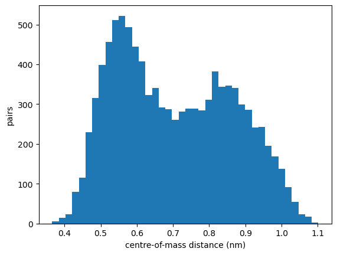

From an MD morphology to a state file¶
VOTCA-XTP works on molecular morphologies from molecular dynamics (MD). The first step of every multiscale workflow is the same: the atoms of the MD snapshot are grouped into the molecules (segments) that the electronic-structure calculations work with, each segment is assigned a QM geometry and classical multipoles, and pairs of neighbouring segments are listed. The result is a state file (state.hdf5) that all later calculators read and extend.
This tutorial does this step for an amorphous film of 1000 thiophene molecules simulated with LAMMPS. The tutorials Charge transport in amorphous thiophene and Excitations of thiophene in its environment start from the same morphology.
You will: write a mapping file, map the MD snapshot, check the mapping, and build the neighbour list.
Requirements¶
VOTCA installed and the environment activated with
VOTCARC.bash(see the installation instructions).Python with
numpy,h5pyandmatplotlib.
The VOTCA programs are command-line tools. Below they are called through a small helper run(), which prints only the last lines of their output, if any; in a terminal you would call them directly. At the end of their output, the programs list the references to cite for the methods they used.
[1]:
import subprocess
import numpy as np
import h5py
import matplotlib.pyplot as plt
def run(command, show=0, output=False):
"""Run a VOTCA command; print the last `show` lines of its output (0: none)."""
result = subprocess.run(command, shell=True, text=True,
stdout=subprocess.PIPE, stderr=subprocess.STDOUT)
if result.returncode != 0:
print(result.stdout)
raise RuntimeError(f"'{command}' failed")
if show:
print("\n".join(result.stdout.splitlines()[-show:]))
return result.stdout if output else None
run("rm -f state.hdf5 skeleton.xml *.pdb")
The input¶
The morphology consists of two LAMMPS files in MD_FILES:
thiophene.data, the topology: atoms with their types, masses and charges, and the bonds, which define the molecules;traj.dump, the trajectory: atom positions (here a single snapshot at time step 10000).
For GROMACS the topology is the run input file (topol.tpr) and the trajectory a .gro, .trr or .xtc file; everything below works the same way.
In addition, each kind of molecule needs data from separate gas-phase calculations: optimized QM geometries for the neutral, anionic and cationic molecule (QC_FILES/thiophene_{n,e,h}.xyz) and atomic multipoles with polarizabilities for the same states (MP_FILES/thiophene_{n,e,h}.mps).
The mapping file¶
The mapping file tells xtp_map which MD atoms form a segment and how they correspond to the atoms of the QM geometry and of the multipole file. The names it must use are those of the MD topology. xtp_map -m writes a skeleton with these names:
[2]:
run("xtp_map -t MD_FILES/thiophene.data -c MD_FILES/traj.dump -s skeleton.xml -m")
print(open("skeleton.xml").read())
<topology>
<molecules>
<molecule>
<mdname>C4H4S1</mdname>
<segments>
<segment>
<name>UPTOYOU_BUTUNIQUE</name>
<qmcoords_n>XYZFILE_GROUNDSTATE</qmcoords_n>
<multipoles_n>MPSFILE_GROUNDSTATE</multipoles_n>
<map2md>WANTTOMAPTOMDGEOMETRY</map2md>
<U_xX_nN_h>REORG1_hole</U_xX_nN_h>
<U_nX_nN_h>REORG2_hole</U_nX_nN_h>
<U_xN_xX_h>REORG3_hole</U_xN_xX_h>
<fragments>
<fragment>
<name>UPTOYOU_BUTUNIQUE</name>
<mdatoms> 0:C63:0 0:C63:1 0:S23:2 0:C63:3 0:C63:4 0:H20:5 0:H20:6 0:H20:7 0:H20:8</mdatoms>
<qmatoms>IDS of QMATOMS i.e 0:C 1:H 2:C</qmatoms>
<mpoles>IDS of MPOLES i.e 0:C 1:H 2:C</mpoles>
<weights>weights for mapping(often atomic mass) i.e. 12 1 12</weights>
<localframe>IDs of up to 3 qmatoms or mpoles i.e. 0 1 2</localframe>
</fragment>
</fragments>
</segment>
</segments>
</molecule>
</molecules>
</topology>
The LAMMPS reader names the molecule by its composition (C4H4S1) and every atom by its element (recognized from the mass) followed by its LAMMPS atom type (C63, S23, H20). An MD atom is written as residue:name:index, where the index counts the atoms within the molecule. With GROMACS the molecule and atom names of the topology are used.
The complete mapping file system.xml fills in the placeholders:
[3]:
print(open("system.xml").read())
<?xml version="1.0"?>
<topology>
<molecules>
<molecule>
<mdname>C4H4S1</mdname>
<segments>
<segment>
<name>thiophene</name>
<qmcoords_n>QC_FILES/thiophene_n.xyz</qmcoords_n>
<qmcoords_e>QC_FILES/thiophene_e.xyz</qmcoords_e>
<qmcoords_h>QC_FILES/thiophene_h.xyz</qmcoords_h>
<multipoles_n>MP_FILES/thiophene_n.mps</multipoles_n>
<multipoles_e>MP_FILES/thiophene_e.mps</multipoles_e>
<multipoles_h>MP_FILES/thiophene_h.mps</multipoles_h>
<map2md>0</map2md>
<U_xX_nN_h>8.7140</U_xX_nN_h>
<U_nX_nN_h>0.1908</U_nX_nN_h>
<U_xN_xX_h>0.5711</U_xN_xX_h>
<U_xX_nN_e>1.5972</U_xX_nN_e>
<U_nX_nN_e>0.1940</U_nX_nN_e>
<U_xN_xX_e>0.1879</U_xN_xX_e>
<fragments>
<fragment>
<name>thiophene</name>
<mdatoms> 0:C63:0 0:C63:1 0:S23:2 0:C63:3 0:C63:4 0:H20:5 0:H20:6 0:H20:7 0:H20:8</mdatoms>
<qmatoms> 0:C 1:C 2:S 3:C 4:C 5:H 6:H 7:H 8:H </qmatoms>
<mpoles> 0:C 1:C 2:S 3:C 4:C 5:H 6:H 7:H 8:H</mpoles>
<weights> 12 12 32 12 12 1 1 1 1</weights>
<localframe>1 2 3</localframe>
</fragment>
</fragments>
</segment>
</segments>
</molecule>
</molecules>
</topology>
A segment is the unit of the electronic-structure calculations; here one segment per molecule. A large molecule can be split into several segments, e.g. one per conjugated unit of a polymer.
qmcoords_*andmultipoles_*give the QM geometry and the multipoles for each state:nneutral,eelectron (anion),hhole (cation).A fragment is a rigid part of a segment.
mdatoms,qmatomsandmpoleslist corresponding atoms in the same order; the QM geometry is placed onto the MD atoms of each fragment by a rigid-body fit, using theweights(here the masses) and the local frame defined by the atoms inlocalframe. Withmap2mdset to 1, the QM atoms are put directly onto the MD positions instead.U_xX_nN_*,U_nX_nN_*andU_xN_xX_*are internal energies (in eV) of the molecule in the charged state from gas-phase calculations; they enter the site energies and reorganization energies of the charge-transport tutorial.
Mapping the snapshot¶
xtp_map reads the topology and trajectory, applies the mapping, and writes the state file:
[4]:
run("xtp_map -t MD_FILES/thiophene.data -c MD_FILES/traj.dump -s system.xml -f state.hdf5", show=4)
Creating statefile state.hdf5
Frame with id 10000 was not in statefile state.hdf5 ,adding it now.
Wrote MD topology (step = 10000, time = 0) to state.hdf5
... .
The state file is an HDF5 file with one group per frame; each segment stores its atoms with the MD positions (in bohr):
[5]:
with h5py.File("state.hdf5", "r") as f:
frame = f["frame_10000"]
print("box diagonal (nm):", np.diag(frame["box"][()]) * 0.0529177)
segments = frame["segments"]
print("segments:", len(segments))
atoms = segments["segment0"]["atoms"][()].ravel()
print("atoms of segment 0:", " ".join(a.decode() for a in atoms["name"]))
box diagonal (nm): [5.15643722 5.15643722 5.15643722]
segments: 1000
atoms of segment 0: C63 C63 S23 C63 C63 H20 H20 H20 H20
Checking the mapping¶
mapchecker writes the segments as they are in the MD (md_segments_*.pdb), with the QM geometries mapped onto them (qm_segments_*.pdb), and with the multipoles of the charged states (mp_segments_*.pdb). Viewing them in e.g. VMD on top of each other is the quickest check that the atoms correspond. Here we compare the mapped QM geometries with the MD geometry numerically: since the QM geometry is fitted as a rigid body, the deviation measures how far the molecules in the MD differ
from the optimized gas-phase geometry.
[6]:
run("xtp_run -e mapchecker -c map_file=system.xml -f state.hdf5")
def read_pdb(filename):
return np.array([[float(line[30:38]), float(line[38:46]), float(line[46:54])]
for line in open(filename) if line.startswith(("ATOM", "HETATM"))])
md = read_pdb("md_segments_step_10000.pdb").reshape(-1, 9, 3)
qm = read_pdb("qm_segments_n_step_10000.pdb").reshape(-1, 9, 3)
rmsd = np.sqrt(np.mean(np.sum((md - qm)**2, axis=2), axis=1))
print(f"RMSD between MD and mapped QM geometry: mean {rmsd.mean():.3f} A, max {rmsd.max():.3f} A")
RMSD between MD and mapped QM geometry: mean 0.180 A, max 0.372 A
A wrong atom order in the mapping file shows up as a large deviation (several Å) for every molecule.
Neighbour list¶
Charge or energy transfer is computed for pairs of segments that are close to each other. neighborlist lists all pairs with at least one pair of atoms closer than the cutoff (here 0.6 nm):
[7]:
run("xtp_run -e neighborlist -c constant=0.6 -f state.hdf5", show=0)
with h5py.File("state.hdf5", "r") as f:
pairs = f["frame_10000"]["neighborlist"]["pairs"][()]
distance = np.sqrt(pairs["delta_Rx"]**2 + pairs["delta_Ry"]**2 + pairs["delta_Rz"]**2) * 0.0529177
print(f"{len(pairs)} pairs, {2 * len(pairs) / 1000:.1f} neighbours per molecule")
plt.hist(distance, bins=40)
plt.xlabel("centre-of-mass distance (nm)")
plt.ylabel("pairs")
plt.show()
10151 pairs, 20.3 neighbours per molecule

The cutoff acts on the closest atoms, so the centre-of-mass distances of the pairs extend beyond it. Whether the cutoff is large enough can be checked later from the couplings: those of the most distant pairs should be negligible.
Summary¶
The mapping file connects the MD topology to the QM geometries and multipoles of each segment;
xtp_map -mwrites a skeleton with the names of the MD topology.xtp_mapwrites the state file;mapcheckerchecks the mapping;neighborlistadds the pairs.The state file is the input for all further steps: site energies, couplings and transport (Charge transport in amorphous thiophene) or excited states in the environment (Excitations of thiophene in its environment).